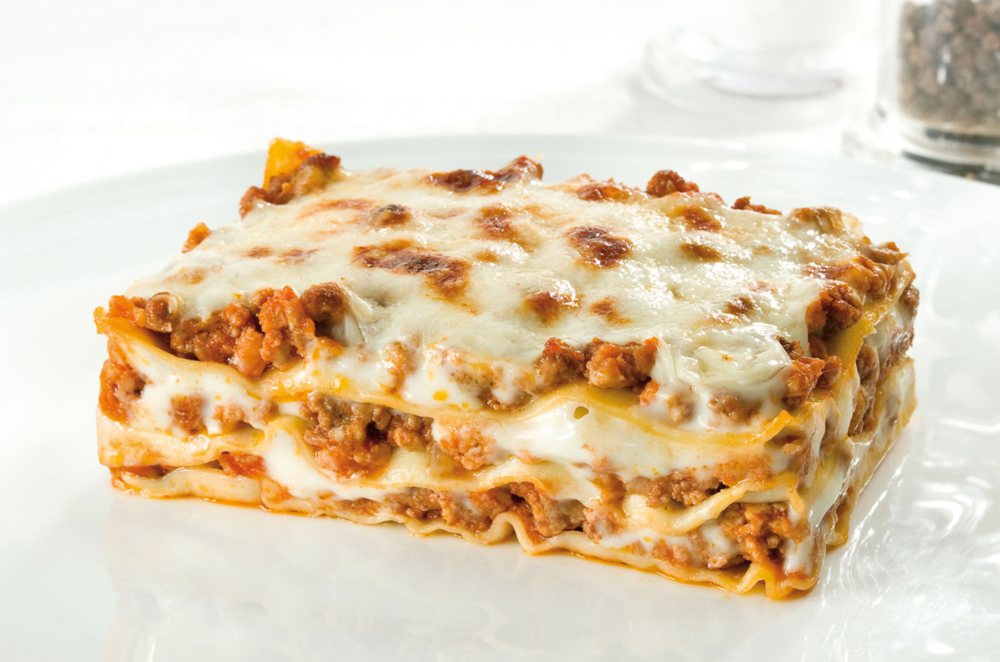

Le lasagne alla Bolognese sono un'istituzione, la lasagna al forno per eccellenza, il piatto tipico della domenica. Questa pietanza ricca e saporita è originaria dell'Emilia e, nello specifico, della città di Bologna.
Le lasagne al forno, però, sono conosciute, apprezzate, fatte e rifatte per le feste e non solo, assaggiate e condivise in tutta Italia e all'estero proprio come piatto simbolo italiano. La lasagna al forno è composta da stati di pasta fresca all'uovo, conditi con il classico ragù della tradizione, besciamella e formaggio grattugiato.